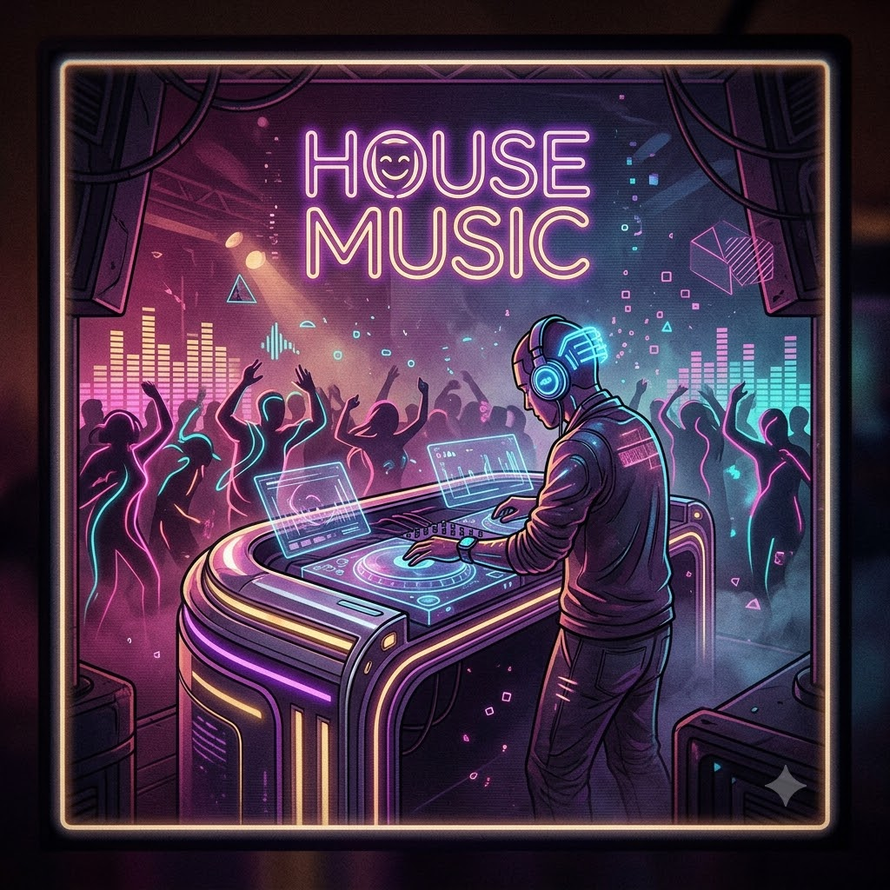
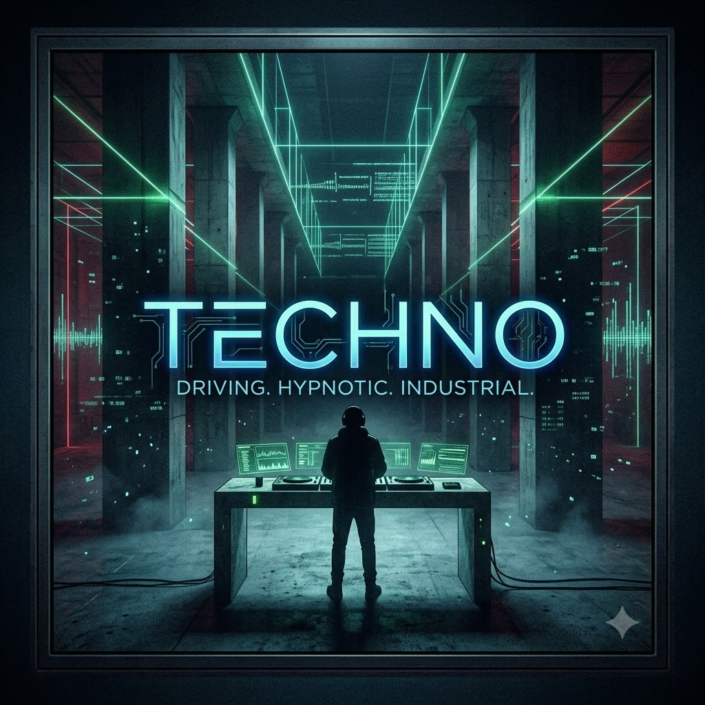
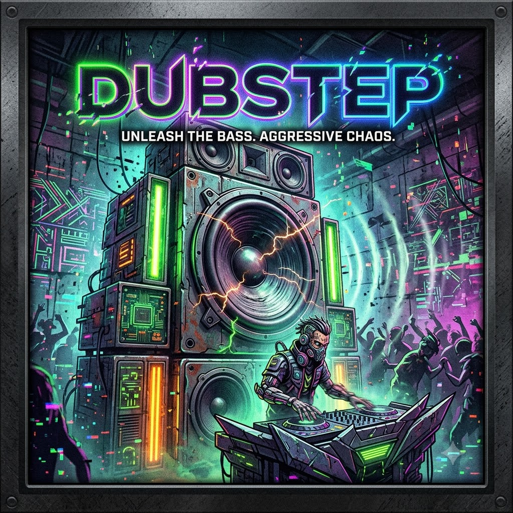
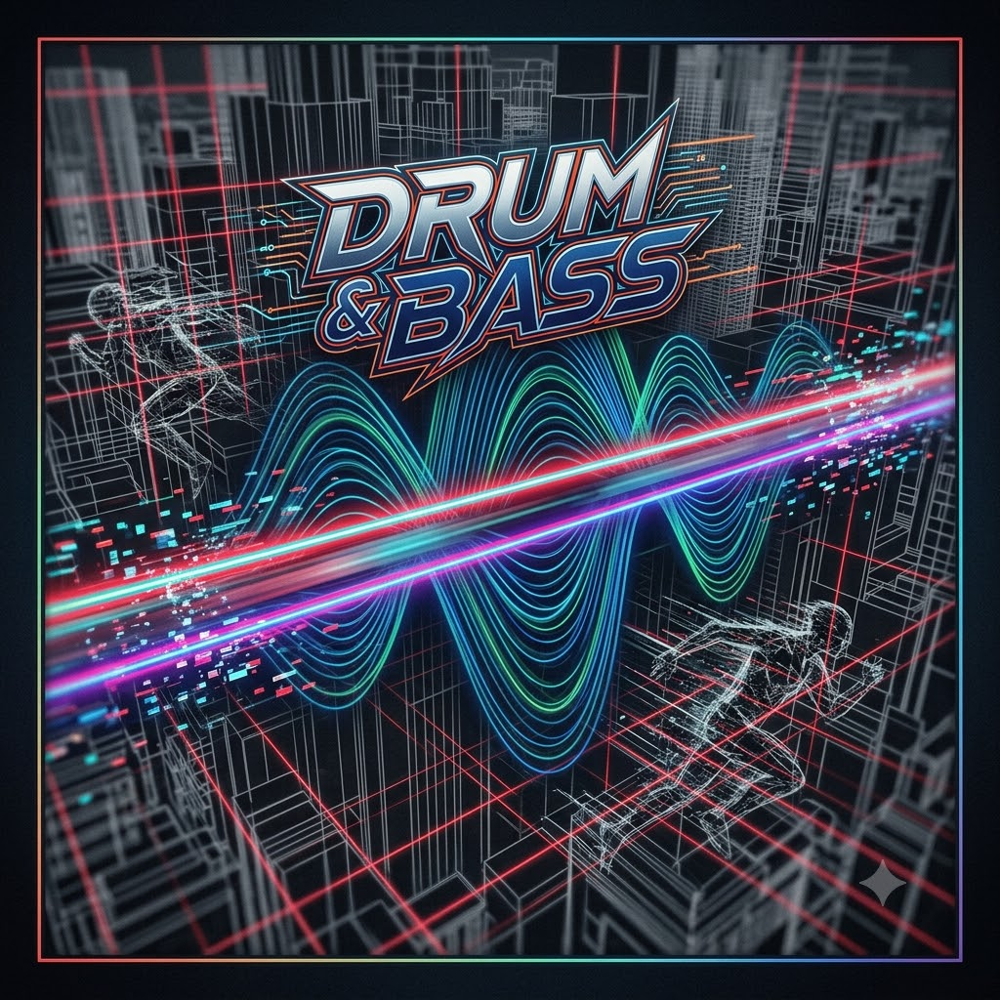
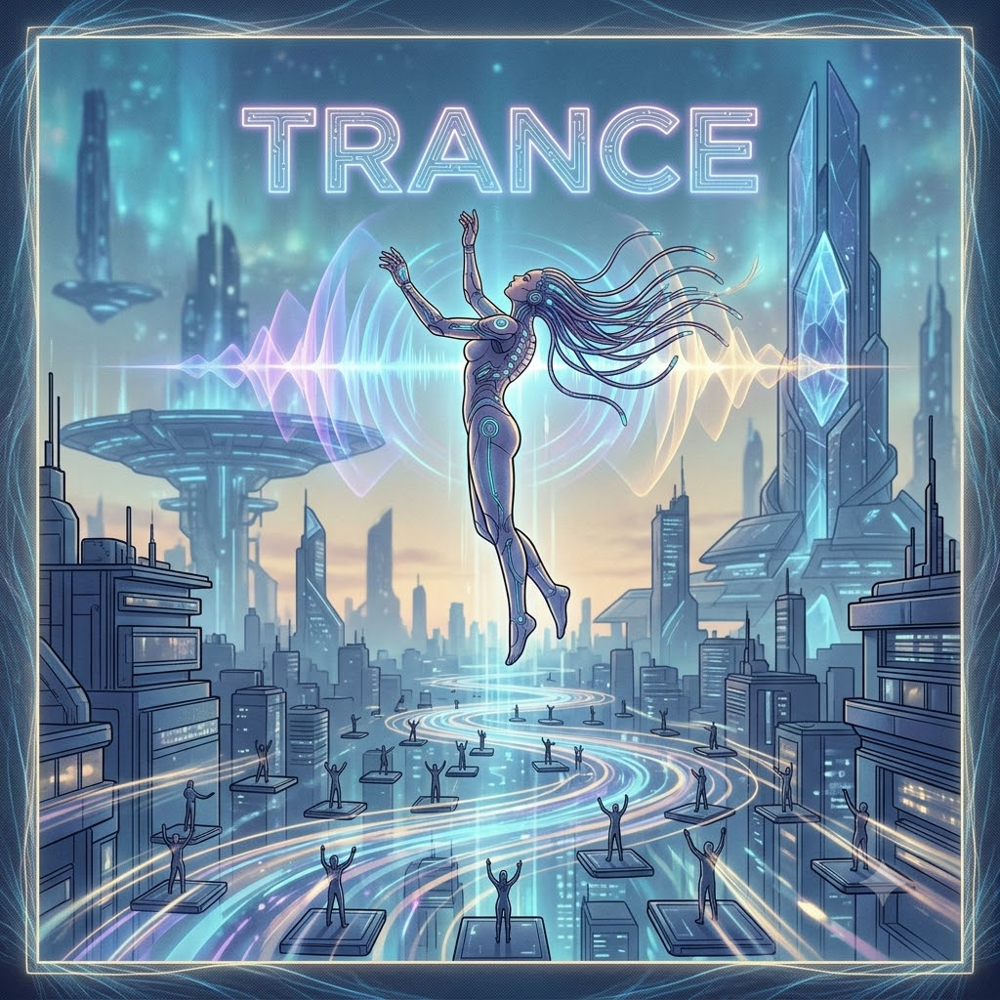
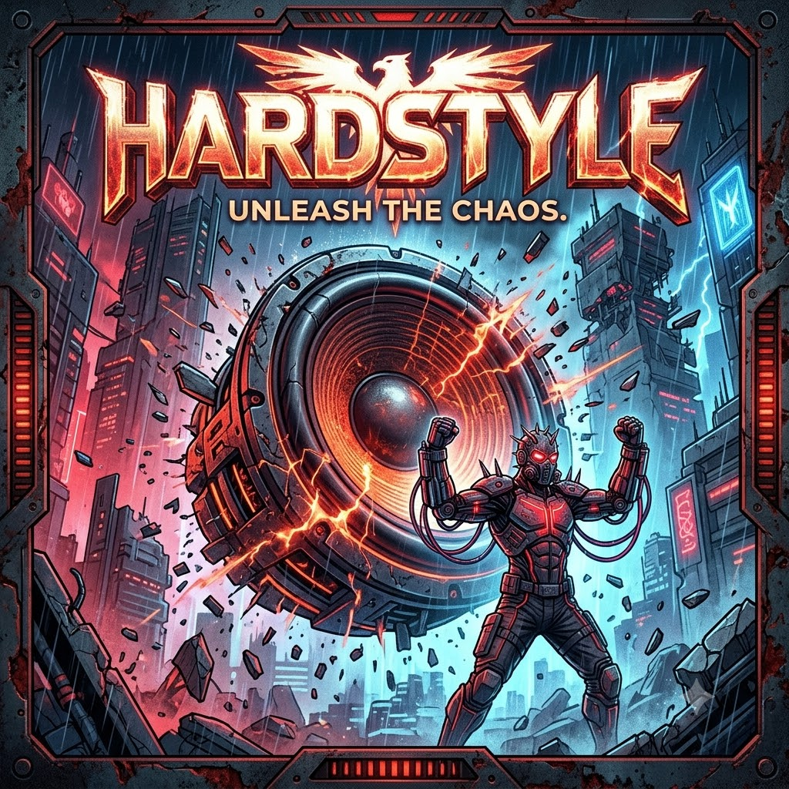

House
The ultimate feel-good vibe; a steady, soulful 120BPM four-on-the-floor beat that just makes you want to groove.

Techno
Dark, hypnotic, and industrial; it’s a repetitive, driving rhythm designed to lose yourself to in a warehouse at 4 AM.

Dubstep
Heavy, aggressive, and unpredictable; known for its massive bass drops, mechanical wobbles, and pure, energetic chaos.

DnB
Fast-paced and frantic 174BPM; it pairs rapid-fire breakbeats with deep, rolling basslines for a non-stop rush.

Trance
Emotional and uplifting; it builds massive, melodic soundscapes with euphoric drops that make you feel like you're flying.

Hardstyle
High-energy and intense; defined by a fast, distorted, hard-hitting kick drum and epic, festival-sized melodies.
1970s Die Synthesizer-Pioniere: Bands wie Kraftwerk und Producer wie Giorgio Moroder legen mit analogen Synthesizern und hypnotischen 4/4-Beats den Grundstein für Sequenzer-Musik.
1980s Die Geburt von House & Techno: In Chicago (Warehouse) und Detroit (The Electrifying Mojo) entsteht der rohe, elektronische Club-Sound auf legendären Drum-Machines wie der TR-808 und TR-909.
1990s Der europäische Rave-Boom: Elektronische Musik wird zum Massenphänomen. Die Loveparade in Berlin, Eurodance in den Charts und riesige Underground-Raves prägen ein ganzes Jahrzehnt.
2010s Die EDM-Stadion-Ära: Der Begriff "EDM" wird geprägt. DJs wie Avicii, Swedish House Mafia und Skrillex füllen gigantische Stadien weltweit und erobern die Mainstream-Charts im Sturm.
Today Die unaufhaltsame Milliarden-Industrie: Von Mega-Festivals wie dem Tomorrowland bis hin zu düsteren Underground-Techno-Clubs – elektronische Musik ist eine weltweite Kultur- und Wirtschaftsmacht.
IMS Business Report Insights
The Industry in Numbers
The global electronic music industry market value, surging with massive acceleration worldwide.
Annual Market Growth
How electronic music sector growth outpaces traditional market baselines.
Key Revenue Drivers
Where the billions are generated within the ecosystem.